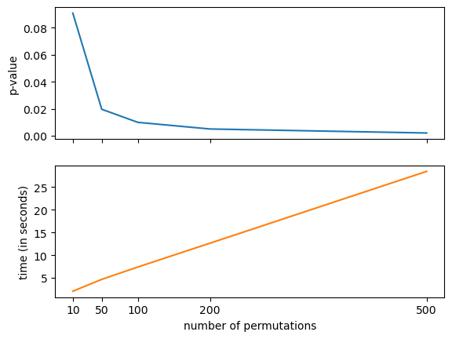

import numpy as np
import pandas as pd
from matplotlib import pyplot as plt
import seaborn as sns
from src import item_analysis
import plotly.io as pio
pio.renderers.default='notebook'
%load_ext autoreload
%autoreload 2Accessing data
Openmind
om2/user/maedbh/item_analysis/data
Google Drive
https://drive.google.com/drive/folders/1ylVmbKlmIZg5KWwnMSwMVHY1tcJglqjT?usp=sharing
Data Organization
├── data <- Data folder (hosted on Google Drive and OpenMind)
│ ├── Child-features-preprocessed.csv <- All features (preprocessed) for Child questionnaires
│ ├── Child-features-raw.csv <- All features (raw) for Child questionnaires
│ ├── Parent-features-preprocessed.csv <- All features (preprocessed) for Parent questionnaires
│ ├── Parent-features-raw.csv <- All features (raw) for Parent questionnaires
│ ├── Teacher-features-preprocessed.csv <- All features (preprocessed) for Teacher questionnaires
│ ├── Teacher-features-raw.csv <- All features (raw) for Teacher questionnaires
│ ├── item-names-cleaned.csv <- Dictionary linking questionnaire columns to question keys
│ ├── participants.csv <- Participant identifiers (for entire dataset)# load data
# set data dir (wherever data csv files are saved)
data_dir = '/Users/maedbhking/Documents/item_analysis/data' # set data dir
df_data, df_dict, df_diagnosis = item_analysis.load_data(
data_dir=data_dir,
assessment='Parent', # Teacher, Child
data_type='preprocessed'
)/Users/maedbhking/Documents/item_analysis/src/item_analysis.py:24: DtypeWarning:
Columns (137,152) have mixed types. Specify dtype option on import or set low_memory=False.
item_analysis.load_data?Assessment List
All behavioral questionnaires are detailed in this assessment list: https://docs.google.com/spreadsheets/d/1sGb3ECGR47BzIWNZwzh4ARrjFaf5ByVA/edit?usp=sharing&ouid=110847987931723045299&rtpof=true&sd=true
For each assessment (Child, Parent, Teacher) there are multiple domains and within each domain there are multiple measures. Each measure is given an abbreviation (e.g., Temporal Discounting Task is abbreviated as TempDisc)
Inspecting data dictionary
The data dictionary contains all of the questions (6119) that are administered to every participant in the healthy brain network dataset (incl. Child, Parent, and Teacher Measures)
Structure of dictionary: * questions: the exact question that is asked * keys: unique identifier for each question * datadic: abbreviated name of each measure, should correspond to Abbreviation(s) LORIS in Assessment Link (although there are some differences): https://docs.google.com/spreadsheets/d/1sGb3ECGR47BzIWNZwzh4ARrjFaf5ByVA/edit?usp=sharing&ouid=110847987931723045299&rtpof=true&sd=true * col_name: the column name linking each question to the data (data are in df_data dataframe) * assessment: assessment(e.g., Parent Measures, Child Measures, Teacher Measures) * domains: domain (e.g., Demographic_Questionnaire_Measures) * measures: measures (e.g., Child Mind Institute Symptom Checker)
# data dictionary
df_dict.tail(5)| questions | keys | datadic | col_name | assessment | domains | measures | |
|---|---|---|---|---|---|---|---|
| 6114 | g. Hallucinogens (psychedelics, LSD, mescaline... | CSC_55gP | SympChck | SympChck,CSC_55gP | Parent Measures | Demographic_Questionnaire_Measures | Child Mind Institute Symptom Checker |
| 6115 | h. Solvents/Inhalants (glue, gasoline, chlorof... | CSC_55hC | SympChck | SympChck,CSC_55hC | Parent Measures | Demographic_Questionnaire_Measures | Child Mind Institute Symptom Checker |
| 6116 | h. Solvents/Inhalants (glue, gasoline, chlorof... | CSC_55hP | SympChck | SympChck,CSC_55hP | Parent Measures | Demographic_Questionnaire_Measures | Child Mind Institute Symptom Checker |
| 6117 | i. Other (prescription drugs, nitrous oxide, e... | CSC_55iC | SympChck | SympChck,CSC_55iC | Parent Measures | Demographic_Questionnaire_Measures | Child Mind Institute Symptom Checker |
| 6118 | i. Other (prescription drugs, nitrous oxide, e... | CSC_55iP | SympChck | SympChck,CSC_55iP | Parent Measures | Demographic_Questionnaire_Measures | Child Mind Institute Symptom Checker |
df_dict.shape(1725, 7)Inspecting data
- Columns: all data columns for a particular assessment (example given here is Parent Measures) + demographics (sex, age, race, ethnicity) + clinical diagnoses (diagnosis, comorbidities)
- Rows: all possible participants, each participant has a unique identifier
df_data.head(10)| Identifiers | Sex | Age | Diagnosis | comorbidities | Race | Ethnicity | PreInt_EduHx,CPSE | PreInt_EduHx,EI | PreInt_EduHx,IEP | ... | WHODAS_P,WHODAS_P_Days01 | WHODAS_P,WHODAS_P_Days02 | WHODAS_P,WHODAS_P_Days03 | WHODAS_P,WHODAS_P_Total | DailyMeds,alcohol | DailyMeds,caffiene | DailyMeds,drugs | DailyMeds,hours_sleep | DailyMeds,medications | DailyMeds,nicotine | |
|---|---|---|---|---|---|---|---|---|---|---|---|---|---|---|---|---|---|---|---|---|---|
| 0 | NDARAA075AMK | -1.323148 | -1.035197 | -0.724913 | -0.888546 | -1.734135 | -1.866216 | -0.613334 | -0.545866 | -1.077767 | ... | 0.000000 | -5.110389e-17 | 0.000000 | -1.341494e-16 | 2.125544e+00 | -1.319479e+00 | 2.111489e+00 | -2.271922 | 7.876414e+00 | 2.125544e+00 |
| 1 | NDARAA112DMH | 0.755773 | -1.372556 | -0.635508 | -0.269201 | -1.213304 | -0.570331 | -0.613334 | -0.545866 | -1.077767 | ... | 0.000000 | -5.110389e-17 | 0.000000 | -1.341494e-16 | 2.125544e+00 | -1.319479e+00 | 2.111489e+00 | 4.546433 | -1.580221e+00 | 2.125544e+00 |
| 2 | NDARAA117NEJ | 0.755773 | -0.821792 | -0.635508 | -0.269201 | -1.213304 | -0.570331 | -0.613334 | -0.545866 | -1.077767 | ... | -0.532893 | -3.365649e-01 | -0.373375 | 6.593918e-01 | 2.125544e+00 | -1.319479e+00 | 2.111489e+00 | -0.412371 | 7.876414e+00 | 2.125544e+00 |
| 3 | NDARAA306NT2 | -1.323148 | 3.099052 | -0.546104 | 3.446868 | -1.734135 | 0.725554 | -0.613334 | -0.545866 | 0.966150 | ... | 1.031089 | 4.266465e+00 | 4.305747 | 2.389542e+00 | 8.860923e-16 | -2.984377e-16 | -8.978377e-16 | 0.000000 | 2.624744e-16 | 8.860923e-16 |
| 4 | NDARAA358BPN | 0.755773 | 0.427258 | -0.456699 | -0.888546 | -1.734135 | -1.866216 | -0.613334 | -0.545866 | 0.966150 | ... | 0.000000 | -5.110389e-17 | 0.000000 | -1.341494e-16 | 8.860923e-16 | -2.984377e-16 | -8.978377e-16 | 0.000000 | 2.624744e-16 | 8.860923e-16 |
| 5 | NDARAA504CRN | -1.323148 | -0.339743 | -0.367295 | 1.588833 | -0.692474 | -0.570331 | -0.613334 | -0.545866 | -1.077767 | ... | -0.532893 | -3.365649e-01 | -0.373375 | -2.846010e-01 | 8.860923e-16 | -2.984377e-16 | -8.978377e-16 | 0.000000 | 2.624744e-16 | 8.860923e-16 |
| 6 | NDARAA536PTU | 0.755773 | 0.468663 | -0.367295 | -0.888546 | -1.213304 | -0.570331 | -0.613334 | -0.545866 | -1.077767 | ... | 0.000000 | -5.110389e-17 | 0.000000 | -1.341494e-16 | 8.860923e-16 | -2.984377e-16 | -8.978377e-16 | 0.000000 | 2.624744e-16 | 8.860923e-16 |
| 7 | NDARAA773LUW | -1.323148 | 0.936781 | -0.724913 | -0.888546 | -0.171644 | 0.725554 | -0.613334 | -0.545866 | 0.966150 | ... | -1.054221 | -3.365649e-01 | 0.796405 | -1.071513e+00 | 8.860923e-16 | -2.984377e-16 | -8.978377e-16 | 0.000000 | 2.624744e-16 | 8.860923e-16 |
| 8 | NDARAA940JHB | 0.755773 | 0.633502 | -0.635508 | -0.888546 | -0.692474 | -0.570331 | -0.613334 | -0.545866 | -1.077767 | ... | -0.949955 | -3.365649e-01 | -0.139419 | -4.424366e-01 | 8.860923e-16 | -2.984377e-16 | -8.978377e-16 | 0.000000 | 2.624744e-16 | 8.860923e-16 |
| 9 | NDARAA947ZG5 | 0.755773 | 0.933623 | -0.635508 | 0.969488 | 0.349187 | 0.725554 | -0.613334 | -0.545866 | 0.966150 | ... | -0.011566 | -5.110389e-17 | 0.000000 | 1.131388e+00 | 8.860923e-16 | -2.984377e-16 | -8.978377e-16 | 0.000000 | 2.624744e-16 | 8.860923e-16 |
10 rows × 1759 columns
df_data.shape(4767, 1759)Get information on clinical diagnosis
- When data are preprocessed (as they are here), all columns are numeric - imputed and scaled (mean 0 and std 1).
- To get categorical values for some of the numeric columns (e.g,. Sex, Diagnosis, Race, Ethnicity), merge identfiers with df_diagnosis - see below
# merge diagnosis categorical information with data
df_data_dx = df_diagnosis[['Identifiers', 'Age', 'Sex', 'Diagnosis', 'Race', 'Ethnicity']].merge(df_data, on=['Identifiers'])
df_data_dx.columns = df_data_dx.columns.str.replace('_x', '_raw').str.replace('_y', '')
df_data_dx.head(5)| Identifiers | Age_raw | Sex_raw | Diagnosis_raw | Race_raw | Ethnicity_raw | Sex | Age | Diagnosis | comorbidities | ... | WHODAS_P,WHODAS_P_Days01 | WHODAS_P,WHODAS_P_Days02 | WHODAS_P,WHODAS_P_Days03 | WHODAS_P,WHODAS_P_Total | DailyMeds,alcohol | DailyMeds,caffiene | DailyMeds,drugs | DailyMeds,hours_sleep | DailyMeds,medications | DailyMeds,nicotine | |
|---|---|---|---|---|---|---|---|---|---|---|---|---|---|---|---|---|---|---|---|---|---|
| 0 | NDARAA075AMK | 6.728040 | female | No Diagnosis Given | Unknown | Unknown | -1.323148 | -1.035197 | -0.724913 | -0.888546 | ... | 0.000000 | -5.110389e-17 | 0.000000 | -1.341494e-16 | 2.125544e+00 | -1.319479e+00 | 2.111489e+00 | -2.271922 | 7.876414e+00 | 2.125544e+00 |
| 1 | NDARAA112DMH | 5.545744 | male | ADHD-Combined Type | Hispanic | Hispanic or Latino | 0.755773 | -1.372556 | -0.635508 | -0.269201 | ... | 0.000000 | -5.110389e-17 | 0.000000 | -1.341494e-16 | 2.125544e+00 | -1.319479e+00 | 2.111489e+00 | 4.546433 | -1.580221e+00 | 2.125544e+00 |
| 2 | NDARAA117NEJ | 7.475929 | male | ADHD-Combined Type | Hispanic | Hispanic or Latino | 0.755773 | -0.821792 | -0.635508 | -0.269201 | ... | -0.532893 | -3.365649e-01 | -0.373375 | 6.593918e-01 | 2.125544e+00 | -1.319479e+00 | 2.111489e+00 | -0.412371 | 7.876414e+00 | 2.125544e+00 |
| 3 | NDARAA306NT2 | 21.216746 | female | Generalized Anxiety Disorder | Unknown | White/Caucasian | -1.323148 | 3.099052 | -0.546104 | 3.446868 | ... | 1.031089 | 4.266465e+00 | 4.305747 | 2.389542e+00 | 8.860923e-16 | -2.984377e-16 | -8.978377e-16 | 0.000000 | 2.624744e-16 | 8.860923e-16 |
| 4 | NDARAA358BPN | 11.853296 | male | No Diagnosis Given: Incomplete Eval | Unknown | Unknown | 0.755773 | 0.427258 | -0.456699 | -0.888546 | ... | 0.000000 | -5.110389e-17 | 0.000000 | -1.341494e-16 | 8.860923e-16 | -2.984377e-16 | -8.978377e-16 | 0.000000 | 2.624744e-16 | 8.860923e-16 |
5 rows × 1764 columns
Doing item analysis on sentences within and across measures
One question that we have with this dataset is how similar sentences (within and between) measures are semantically similar to each other (i.e. are they arriving at similar constructs). Each measure was designed to measure specific constructs, however, it is not clear the extent to which there is overlap across the many measures that are administered to children in order to arrive at a diagnosis.
By applying machine learning tools (e.g., transformer models: https://www.sbert.net/), we can statistically assess the semantic similarity between sentences.
Then, knowing the similarity between questions, we can compare the similarity between responses to these questions.
Example
To start, take one measure “CBCL” (https://docs.google.com/spreadsheets/d/1sWNibCIiNhaQSMG3YEszyQvSl8qe7CT3/edit?usp=sharing&ouid=110847987931723045299&rtpof=true&sd=true) and determine the similarity across sentences within this questionnaire
# all possible measures to index
df_dict['datadic'].unique()array(['APQ_P', 'ARI_P', 'ASSQ', 'Barratt', 'CBCL', 'CBCL_Pre', 'CIS_P',
'DTS', 'ESWAN', 'FSQ', 'ICU_P', 'MFQ_P', 'NLES_P', 'PBQ', 'PCIAT',
'PhenX_Neighborhood', 'PreInt_Demos_Home', 'PreInt_FamHx_RDC',
'PreInt_Lang', 'PSI', 'RBS', 'SAS', 'SCARED_P', 'SCQ', 'SDQ',
'SRS', 'SRS_Pre', 'SWAN', 'Vineland', 'WHODAS_P', 'SympChck'],
dtype=object)## Get Answers + Questions for example measure (CBCL)
# get CBCL questions
sentences = df_dict[df_dict['datadic']=='CBCL']['questions'].tolist()
# get answers to CBCL questions
cols_to_include = df_data.columns[df_data.columns.str.contains('CBCL,')]
df_A = df_data[cols_to_include]
print(df_A)
print(sentences) CBCL,CBCL_01 CBCL,CBCL_02 CBCL,CBCL_03 CBCL,CBCL_04 CBCL,CBCL_05 \
0 -0.998677 -1.287918e-01 -1.318523 -1.513130e+00 -0.553205
1 0.000000 -2.412916e-17 0.000000 -3.342349e-16 0.000000
2 -0.998677 -1.287918e-01 1.456829 -7.869706e-03 1.377283
3 2.015954 -1.287918e-01 0.069153 -7.869706e-03 1.377283
4 0.000000 -2.412916e-17 0.000000 -3.342349e-16 0.000000
... ... ... ... ... ...
4762 -0.998677 -1.287918e-01 1.456829 1.497390e+00 3.307771
4763 0.508639 -1.287918e-01 0.069153 -7.869706e-03 -0.553205
4764 -0.998677 -1.287918e-01 -1.318523 -1.513130e+00 -0.553205
4765 -0.998677 1.378072e+01 1.456829 1.497390e+00 3.307771
4766 2.015954 -1.287918e-01 1.456829 -1.513130e+00 1.377283
CBCL,CBCL_06 CBCL,CBCL_07 CBCL,CBCL_08 CBCL,CBCL_09 CBCL,CBCL_10 \
0 -0.220852 1.042083 -1.701193e+00 -9.056769e-01 -1.317224
1 0.000000 0.000000 3.240416e-16 1.540112e-16 0.000000
2 -0.220852 1.042083 1.217514e+00 1.868742e+00 0.048798
3 3.609065 -0.695135 -2.418397e-01 4.815325e-01 -1.317224
4 0.000000 0.000000 3.240416e-16 1.540112e-16 0.000000
... ... ... ... ... ...
4762 7.438981 2.779302 1.217514e+00 1.868742e+00 -1.317224
4763 -0.220852 -0.695135 -1.701193e+00 -9.056769e-01 -1.317224
4764 -0.220852 -0.695135 -1.701193e+00 -9.056769e-01 -1.317224
4765 -0.220852 1.042083 1.217514e+00 4.815325e-01 -1.317224
4766 -0.220852 2.779302 -2.418397e-01 4.815325e-01 0.048798
... CBCL,CBCL_SC CBCL,CBCL_SC_T CBCL,CBCL_SP CBCL,CBCL_SP_T \
0 ... -1.608774e-01 -0.198167 -9.092968e-01 -9.693627e-01
1 ... -1.725878e-16 0.000000 -1.353845e-16 9.528337e-16
2 ... 2.170922e+00 1.988684 1.224715e+00 1.176228e+00
3 ... 2.170922e+00 1.988684 6.149977e-01 1.042129e+00
4 ... -1.725878e-16 0.000000 -1.353845e-16 9.528337e-16
... ... ... ... ... ...
4762 ... 2.277558e-01 0.485224 9.198566e-01 1.176228e+00
4763 ... -5.495106e-01 -0.608202 5.279881e-03 3.716315e-01
4764 ... -5.495106e-01 -0.608202 -1.214156e+00 -1.103462e+00
4765 ... 1.005022e+00 1.305293 -2.995790e-01 -3.066676e-02
4766 ... -9.381438e-01 -1.018237 1.529574e+00 1.578526e+00
CBCL,CBCL_TP CBCL,CBCL_TP_T CBCL,CBCL_Total CBCL,CBCL_Total_T \
0 -1.103230 -1.129369e+00 -1.415370 -1.877452e+00
1 0.000000 8.995816e-16 0.000000 6.976624e-16
2 0.483082 6.430986e-01 0.788843 1.068165e+00
3 1.752132 1.782542e+00 1.401125 1.166353e+00
4 0.000000 8.995816e-16 0.000000 6.976624e-16
... ... ... ... ...
4762 1.434869 1.402728e+00 1.523581 1.264540e+00
4763 0.165819 6.430986e-01 -0.476539 -2.082689e-01
4764 -0.785968 -8.761598e-01 -1.456189 -1.975640e+00
4765 -0.151443 1.007426e-02 1.074575 9.699782e-01
4766 1.752132 1.529333e+00 1.278668 1.166353e+00
CBCL,CBCL_WD CBCL,CBCL_WD_T
0 -0.991627 -1.012695e+00
1 0.000000 8.724171e-16
2 -0.619690 -5.215675e-01
3 1.611935 1.320159e+00
4 0.000000 8.724171e-16
... ... ...
4762 3.099684 2.793541e+00
4763 0.496122 2.151233e-01
4764 -0.991627 -1.012695e+00
4765 0.868060 5.834686e-01
4766 0.868060 5.834686e-01
[4767 rows x 146 columns]
['1. Acts too young for his/her age', "2. Drinks alcohol without parents' approval", '3. Argues a lot', '4. Fails to finish things he/she starts', '5. There is very little he/she enjoys', '6. Bowel movements outside toilet', '7. Bragging, boasting', "8. Can't concentrate, can't pay attention for long", '"9. Can\'t get his/her mind off certain thoughts obsessions"', "10. Can't sit still, restless or hyperactive", '11. Clings to adults or too dependent', '12. Complains of loneliness', '13. Confused or seems to be in a fog', '14. Cries a lot', '15. Cruel to animals', '16. Cruelty, bullying, or meanness to others', '17. Daydreams or gets lost in his/her thoughts', '18. Deliberately harms self or attempts suicide', '19. Demands a lot of attention', '20. Destroys his/her own things', '21. Destroys things belonging to his/her family or others', '22. Disobedient at home', '23. Disobedient at school', "24. Doesn't eat well", "25. Doesn't get along well with other kids", "26. Doesn't seem to feel guilty after misbehaving", '27. Easily jealous', '28. Breaks rules at home, school, or elsewhere', '29. Fears certain animals, situations, or places, other than school', '30. Fears going to school', '31. Fears he/she might think or do something bad', '32. Feels he/she has to be perfect', '33. Feels or complains that no one loves him/her', '34. Feels others are out to get him/her', '35. Feels worthless or inferior', '36. Gets hurt a lot, accident-prone', '37. Gets in many fights', '38. Gets teased a lot', '39. Hangs around with others who get in trouble', "40. Hears sounds or voices that aren't there", '41. Impulsive or acts without thinking', '42. Would rather be alone than with others', '43. Lying or cheating', '44. Bites fingernails', '45. Nervous, highstrung, or tense', '46. Nervous movements or twitching', '47. Nightmares', '48. Not liked by other kids', "49. Constipated, doesn't move bowels", '50. Too fearful or anxious', '51. Feels dizzy or lightheaded', '52. Feels too guilty', '53. Overeating', '54. Overtired without good reason', '55. Overweight', '56A. Aches or pains (not stomach or headaches)', '56B. Headaches', '56C. Nausea, feels sick', '56D.A. Problems with eyes (not if corrected by glasses', '56E. Rashes or other skin problems', '56F. Stomachaches', '56G. Vomiting, throwing up', '56H.A. Other', '57. Physically attacks people', '58. Picks nose, skin, or other parts of body', '59. Plays with own sex parts in public', '60. Plays with own sex parts too much', '61. Poor school work', '62. Poorly coordinated or clumsy', '63. Prefers being with older kids', '64. Prefers being with younger kids', '65. Refuses to talk', '"66. Repeats certain acts over and over compulsions "', '67. Runs away from home', '68. Screams a lot', '69. Secretive, keeps things to self', "70. Sees things that aren't there", '71. Self-conscious or easily embarrassed', '72. Sets fires', '73. Sexual problems', '74. Showing off or clowning', '75. Too shy or timid', '76. Sleeps less than most kids', '77. Sleeps more than most kids during day and/or night', '78. Inattentive or easily distracted', '79. Speech problem', '80. Stares blankly', '81. Steals at home', '82. Steals outside the home', "83. Stores up too many things he/she doesn't need", '84. Strange behavior', '85. Strange ideas', '86. Stubborn, sullen, or irritable', '87. Sudden changes in mood or feelings', '88. Sulks a lot', '89. Suspicious', '90. Swearing or obscene language', '91. Talks about killing self', '92. Talks or walks in sleep', '93. Talks too much', '94. Teases a lot', '95. Temper tantrums or hot temper', '96. Thinks about sex too much', '97. Threatens people', '98. Thumb-sucking', '99. Smokes, chews, or sniffs tobacco', '100. Trouble sleeping', '101. Truancy, skips school', '102. Underactive, slow moving, or lacks energy', '103. Unhappy, sad, or depressed', '104. Unusually loud', "105. Uses drugs for nonmedical purposes (don't include alcohol or tobacco)", '106. Vandalism', '107. Wets self during the day', '108. Wets the bed', '109. Whining', '110. Wishes to be of opposite sex', "111. Withdrawn, doesn't get inolved with others", '112. Worries', '113A. Has other problem', '113B. Has other problem', '113C. Has other problem', 'Anxious/Depressed Raw Score', 'Anxious/Depressed T Score', 'Withdrawn/Depressed Raw Score', 'Withdrawn/Depressed T Score', 'Somatic Complaints Raw Score', 'Somatic Complaints T Score', 'Social Problems Raw Score', 'Social Problems T Score', 'Thought Problems Raw Score', 'Thought Problems T Score', 'Attention Problems Raw Score', 'Attention Problems T Score', 'Rule Breaking Behavior Raw Score', 'Rule Breaking Behavior T Score', 'Aggressive Behavior Raw Score', 'Aggressive Behavior T Score', 'Other Problems Raw Score', 'Internalizing Raw Score', 'Internalizing T Score', 'Externalizing Raw Score', 'Externalizing T Score', 'C Score Raw Score', 'Total Raw Score', 'Total T Score']Calculate sentence similarity
Uses basic bert model to calculate sentence similarity across all sentence combinations
# calculate sentence similarity
cosine_scores, pairs = item_analysis.sentence_similarity(sentences)Plot heatmap and dendrogram of cosine scores
(these are just two examples of ways to visualize the results output)
# plot heatmap
item_analysis.plot_heatmap(array=cosine_scores, labels=None);
# plot dendrogram
item_analysis.dendrogram_plot(dataframe=cosine_scores);Plot distribution of scores and sentence similarities
plot the distribution of scores for the sentence pairs (0-1 range) with 1 being most semantically similar and 0 being least semantically similar
then, plot the top 25% of most semantically similar sentences
# plot distribution of scores
scores = [r['score'].tolist() for r in pairs]
sns.histplot(scores)
plt.show()
# plot table
item_analysis.plot_top_sentences(pairs, sentences, A_similarity=None, percent=25, title='CBCL')+--------------------------------------------+-------------------------------------+----------+
| CBCL | | |
+============================================+=====================================+==========+
| Sentence 1 | Sentence 2 | Question |
+--------------------------------------------+-------------------------------------+----------+
| 113A. Has other problem | 113B. Has other problem | 0.99 |
+--------------------------------------------+-------------------------------------+----------+
| 113A. Has other problem | 113C. Has other problem | 0.99 |
+--------------------------------------------+-------------------------------------+----------+
| 113B. Has other problem | 113C. Has other problem | 0.99 |
+--------------------------------------------+-------------------------------------+----------+
| Internalizing T Score | Externalizing T Score | 0.96 |
+--------------------------------------------+-------------------------------------+----------+
| Thought Problems T Score | Attention Problems T Score | 0.95 |
+--------------------------------------------+-------------------------------------+----------+
| Thought Problems Raw Score | Attention Problems Raw Score | 0.94 |
+--------------------------------------------+-------------------------------------+----------+
| Internalizing Raw Score | Externalizing Raw Score | 0.94 |
+--------------------------------------------+-------------------------------------+----------+
| Withdrawn/Depressed Raw Score | Withdrawn/Depressed T Score | 0.93 |
+--------------------------------------------+-------------------------------------+----------+
| Anxious/Depressed Raw Score | Anxious/Depressed T Score | 0.93 |
+--------------------------------------------+-------------------------------------+----------+
| 63. Prefers being with older kids | 64. Prefers being with younger kids | 0.91 |
+--------------------------------------------+-------------------------------------+----------+
| Anxious/Depressed T Score | Withdrawn/Depressed T Score | 0.9 |
+--------------------------------------------+-------------------------------------+----------+
| 56B. Headaches | 56C. Nausea, feels sick | 0.9 |
+--------------------------------------------+-------------------------------------+----------+
| 84. Strange behavior | 85. Strange ideas | 0.9 |
+--------------------------------------------+-------------------------------------+----------+
| Anxious/Depressed Raw Score | Withdrawn/Depressed Raw Score | 0.89 |
+--------------------------------------------+-------------------------------------+----------+
| 25. Doesn't get along well with other kids | 48. Not liked by other kids | 0.88 |
+--------------------------------------------+-------------------------------------+----------+
| Social Problems T Score | Attention Problems T Score | 0.88 |
+--------------------------------------------+-------------------------------------+----------+
| 56B. Headaches | 56F. Stomachaches | 0.87 |
+--------------------------------------------+-------------------------------------+----------+
| Externalizing Raw Score | Externalizing T Score | 0.87 |
+--------------------------------------------+-------------------------------------+----------+
| Social Problems T Score | Thought Problems T Score | 0.87 |
+--------------------------------------------+-------------------------------------+----------+
| Somatic Complaints Raw Score | Thought Problems Raw Score | 0.86 |
+--------------------------------------------+-------------------------------------+----------+
| Rule Breaking Behavior Raw Score | Rule Breaking Behavior T Score | 0.86 |
+--------------------------------------------+-------------------------------------+----------+
| Internalizing T Score | Total T Score | 0.86 |
+--------------------------------------------+-------------------------------------+----------+
| Somatic Complaints T Score | Internalizing T Score | 0.86 |
+--------------------------------------------+-------------------------------------+----------+
| Anxious/Depressed T Score | Withdrawn/Depressed Raw Score | 0.85 |
+--------------------------------------------+-------------------------------------+----------+
| Anxious/Depressed Raw Score | Attention Problems Raw Score | 0.85 |
+--------------------------------------------+-------------------------------------+----------+
| Thought Problems Raw Score | Internalizing Raw Score | 0.85 |
+--------------------------------------------+-------------------------------------+----------+
| Thought Problems Raw Score | Rule Breaking Behavior Raw Score | 0.85 |
+--------------------------------------------+-------------------------------------+----------+
| Attention Problems T Score | Externalizing T Score | 0.85 |
+--------------------------------------------+-------------------------------------+----------+
| Somatic Complaints T Score | Externalizing T Score | 0.85 |
+--------------------------------------------+-------------------------------------+----------+
| 45. Nervous, highstrung, or tense | 46. Nervous movements or twitching | 0.85 |
+--------------------------------------------+-------------------------------------+----------+
| Anxious/Depressed Raw Score | Thought Problems Raw Score | 0.85 |
+--------------------------------------------+-------------------------------------+----------+
| 81. Steals at home | 82. Steals outside the home | 0.84 |
+--------------------------------------------+-------------------------------------+----------+
| Attention Problems Raw Score | Internalizing Raw Score | 0.84 |
+--------------------------------------------+-------------------------------------+----------+
| Thought Problems Raw Score | Other Problems Raw Score | 0.84 |
+--------------------------------------------+-------------------------------------+----------+
| Withdrawn/Depressed Raw Score | Thought Problems Raw Score | 0.84 |
+--------------------------------------------+-------------------------------------+----------+
| Somatic Complaints Raw Score | Attention Problems Raw Score | 0.84 |
+--------------------------------------------+-------------------------------------+----------+Compare answer similarity
Take two separate sets of answers (from two different questionnaires) and calculate correlation between them
# get answers to CBCL questions
cols_to_include = df_data.columns[df_data.columns.str.contains('CBCL,')]
x = df_data[cols_to_include]
# get answers to ESWAN questions
cols_to_include = df_data.columns[df_data.columns.str.contains('ESWAN,')]
y = df_data[cols_to_include]Calculate distance correlation between two questionnaires
import dcor
dcor.distance_correlation(x, y)0.5174836049971643The distance correlation t-test of independence
dcor.independence.distance_correlation_t_test(x, y)HypothesisTest(pvalue=0.0, statistic=57.282815452320364)As we can observe, this test correctly rejects the null hypothesis in the second case and not in the first case.
The test illustrated here is an asymptotic test, that relies in the approximation of the statistic distribution to the Student’s t-distribution under the null hypothesis, when the dimension of the data goes to infinity. This test is thus faster than permutation tests, as it does not require the use of permutations of the data, and it is also deterministic for a given dataset. However, the test should be applied only for high-dimensional data, at least in theory.
We will now plot for the case of normal distributions the histogram of the statistic, and compute the Type I error, as seen in Székely and Rizzo1. Users are encouraged to download this example and increase that number to obtain better estimates of the Type I error. In order to replicate the original results, one should set the value of n_tests to 1000.
Permutation test of distance correlation
item_analysis.distance_correlation_permutation(x,y)The distance covariance test of independence
random_state = np.random.default_rng(83110)
dcor.independence.distance_covariance_test(
x,
y,
num_resamples=200,
random_state=random_state,
)HypothesisTest(pvalue=0.004975124378109453, statistic=213.46578868208118)We can see that the p-value obtained is indeed very small, and thus we can safely reject the null hypothesis, and consider that there is indeed dependence between the random vectors.
The next test illustrated here is a permutation test, which compares the distance covariance of the original dataset with the one obtained after random permutations of one of the input arrays. Thus, increasing the number of permutations makes the p-value more accurate, but increases the computational cost.
Permutation test of distance covariance
item_analysis.distance_covariance_permutation(x,y)
Monte Carlo Test - get estimates of Type I error
We generate independent data following a multivariate Gaussian distribution as well as different t(v) distributions. In all cases we consider random vectors with dimension 5. We perform the tests for different number of observations, computing the number of permutations used as [200 + 5000/n]. We fix the significance level to 0.1.
# monte carlo test
#item_analysis.monte_carlo_test(x,y)TO DO
- add preamble for more context
- tdif similarity - check this comparison with sentenceBert (do the results always form a bellcurve?)
- what kinds of constructs are being evaluated?
- Compare responses across two questionnaires (get correlation distance between two matrices
dcorr) - number of rows must be the same, but the number of columns can be different - hierarchical clustering on the cosine similarity matrix (of sentences) to determine whether there are clusters that fall out (look both at sentences and responses, are these clusters in alignment?)
- compare certain “clusters” across questionnaires - anxiety items on CBCL and GAD7 (or anxiety questionnaire). To what extent are they measuring the same construct?
- can we get a correlation across items per participant? rather than focus on the group level zoom in on the individual
- figure: compare parent vs. teacher vs. child predictions